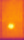

About Solar Panel Defect Detection
Solar panels, vital components in renewable energy production, are prone to various defects over time, such as hotspots, cracks, delamination, and corrosion. These defects not only reduce energy output but also accelerate system degradation if left undetected. Thermal imaging technology offers a non-invasive and efficient method for identifying such anomalies by capturing heat patterns across solar panels.
Traditional manual inspection methods are labor-intensive and often ineffective at early-stage detection. Automated defect identification using deep learning models significantly enhances the accuracy, speed, and scalability of solar farm maintenance operations, ensuring minimal downtime and maximum energy yield.
About Our Detection Model
Our platform utilizes a customized deep learning model trained on thousands of thermal images. It is specifically designed to recognize different types of defects in solar panels with high accuracy. The model analyzes the thermal patterns and predicts whether a panel is healthy or degraded, enabling faster maintenance and reducing energy losses.
The system achieves certain performance metrics in terms of accuracy, precision and recall, so the test results of this system are for reference only.
Common Solar Panel Defects
- Hotspots
- Micro cracks (Cracking)
- Delamination
- Snail Trails
- PID (Potential Induced Degradation)
- Cell Fractures (Cell, Cell-Multi)
- Corrosion
- Encapsulation Failure
- Cracking
- Diode Failure
- Module Offline
- Shadowing
- Vegetation
- Soiling
Detectable Defects
1. Cell Defect

Thermal Signature: Isolated circular hotspots (ΔT >5°C) with sharp temperature gradients, caused by current crowding in damaged crystalline cells.
2. Cell-Multi Defect
Thermal Signature: Parallel thermal stripes (8-12°C variation) across interconnected cells, indicating crack propagation from mechanical stress.
3. Cracking
Thermal Signature: Branch-like cold zones (ΔT 3-5°C) radiating from micro-crack origins, detectable before visual appearance.
4. Diode Failure
Thermal Signature: Sudden temperature spikes (60-80°C) near junction boxes with stair-step thermal patterns in bypass circuits.
5. No-Anomaly
Thermal Signature: Uniform thermal distribution (ΔT <1°C) meeting IEC 61215 stability criteria.
6. Offline-Module
Thermal Signature: Ambient-matched profile (ΔT <0.5°C) showing zero current flow through disconnected circuits.
7. Shadowing
Thermal Signature: Dynamic thermal gradients (4-15°C) matching obstruction shapes with rapid temperature recovery post-shadow.
8. Vegetation
Thermal Signature: Persistent low-temperature zones (ΔT 3-8°C) showing NDVI-correlated vegetation patterns with moisture retention.